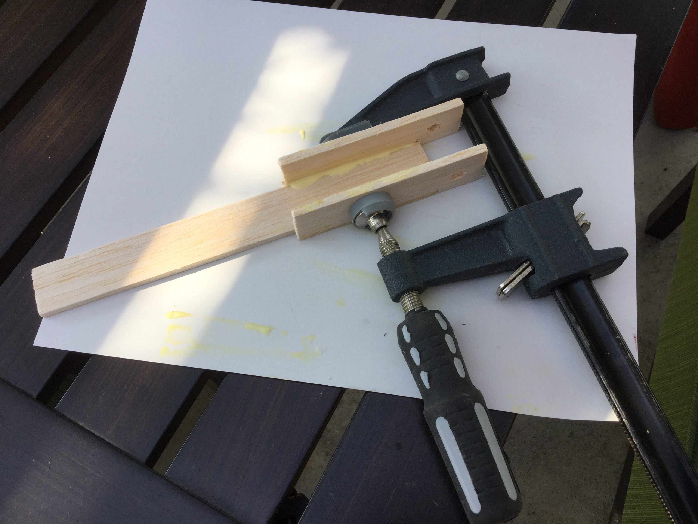
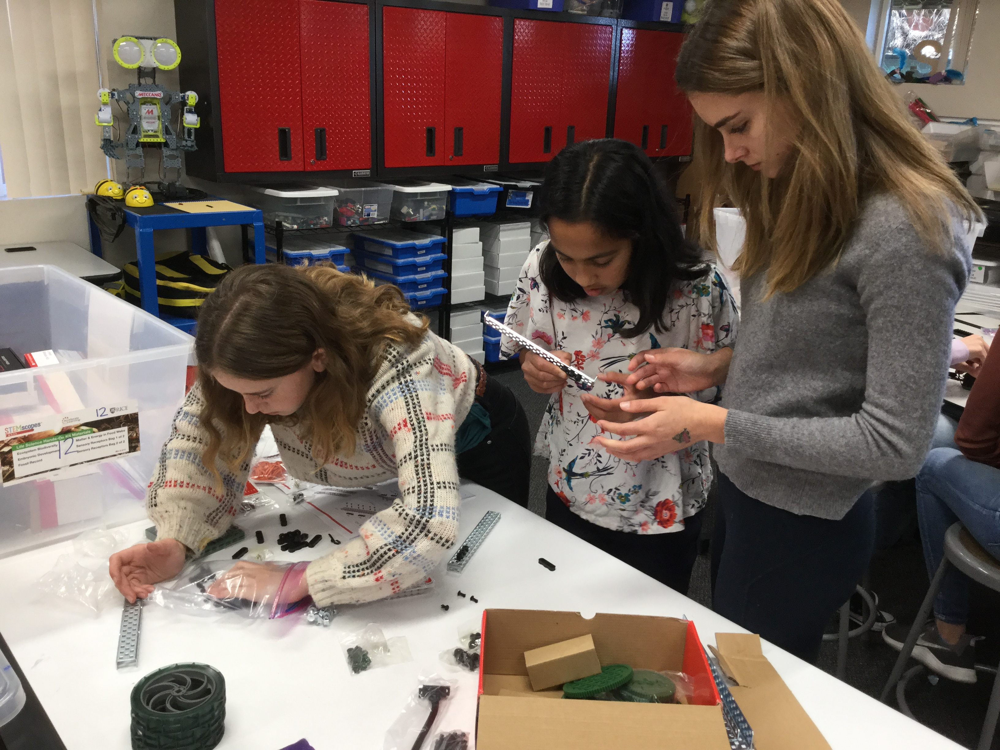

We learned about Prosthetics on WhiteBox Learning. We studied arm mechanics, angles and strength, and gravity. Then, we tested different virtual arm designs with the goal of hitting a target. Following the friendly competition, we built our own prosthetic models and launched ping-pong balls.

This is a picture of my virtual test arm on WhiteBox Learning.
This is the base of an arm drying. Later a forearm and rubberbands will be added to make it an arm.
We learned how to use SketchUp by following tutorials. We practiced our 3D modeling in SketchUp and proceded to make attatchments for a prosthetic arm. My classmate Scarlett and I used a twist and lock system to make a general attatchment rig for the hand, which our other classmates made attatchments for. I 3D printed a drumstick for my attatchment, as well as a sling-shot ring.
Above, Scarlett is holding the prosthetic hand with our attatchment on it, and I am designing my attatchment on the computer.

This is the prosthetic hand our attatchments were made for.
In groups, we assembled Vex Robots with wheels, an arm, a claw, and a limitswitch. We learned how to code the robots using C++. We programmed them to respond to a joystick and to home using the 8U button. We constructed the 8ft by 8ft arena and played Swept Away. Two robots competed to get the balls to the other side of the field. I controlled the robot for my team.
if(vexRT[Btn8u]==1)
{
motor[port7] = -60;
wait1Msec(1000);
motor[port7] = 0;
motor[rightMotor] = -60;
motor[leftmotor] = 60;
wait1Msec(1500)
}
while(SensorValue(limitswitch) == 1)
{
motor[rightmotor] = 60;
motor[leftmotor] = 60;
}
if(SensorValue(limitswetch) == 0)
{
motor[rightmotor] = -60;
motor[leftmotor] = -60;
wit1Msec(1000);
motor[rightmotor] = 60;
motor[leftmotor] = 60;
wait1Msec(1500);
while(SensorValue(limitswitch) == 1)
This is a section of my vex code. It is a portion of the code that uses the 8 up button to have the robot "home."

Above, I am assembling the Vex Robot with my group. On the right, I am coding the robot with my competition group.
We learned HTML and CSS to code our websites. HTML is the framework for the website, and CSS adds the design and flare. I used Brackets to code my website, which you are on right now!

This is a section of the code that made the website you are currently on.